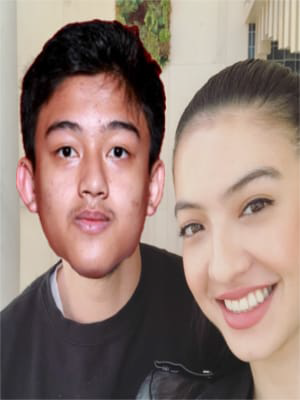

Tugas Labkom (Biodata)
Namanya Kurnia Adam akrab di sapa Adam. Lahir Di Bandung. Dia Anak Kedua dari 4 bersaudara. Dia Hidup di keluarga yang sederhana.Profesinya saat ini adalah seorang pelajar di Sekolah Menengah Analis Kimia Bogor. Cita citanya yaitu menjadi
seorang Analis Kimia. dan berikut adalah Foto beserta Biodatanya :

- Nama :Kurnia Adam
- Tempat Lahir :Bandung,Jawa Barat
- Tanggal Lahir :02 Agustus 2002
- Umur :17 tahun
- Agama :Islam
- Status :pelajar
- Hobby :Bermain Gitar
- Warga Negara :Indonesia
- Alamat :Komplek Batan Lama No.A1 Kawasan Puspiptek
- Sekolah :SMK-SMAK Bogor
- Cita-Cita :Analis Kimia
- Zodiak :Leo